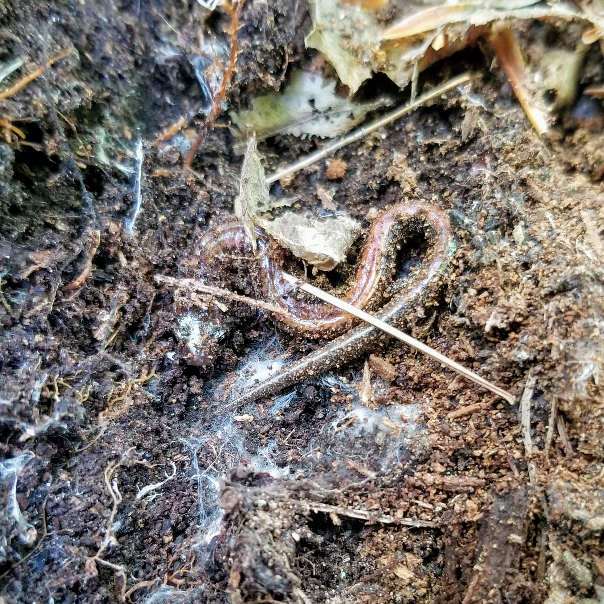
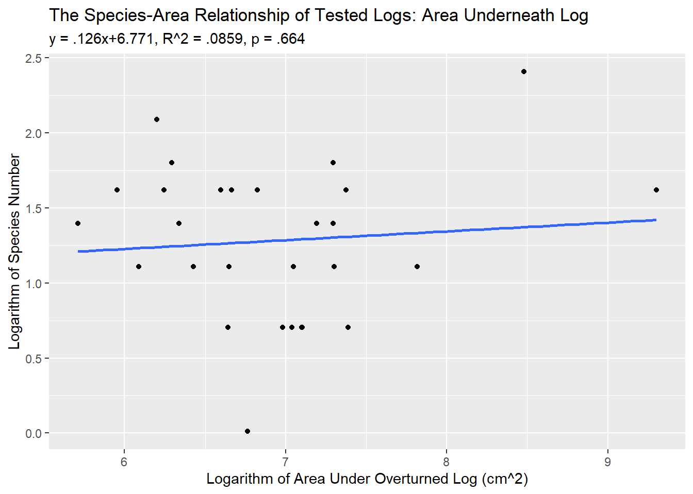
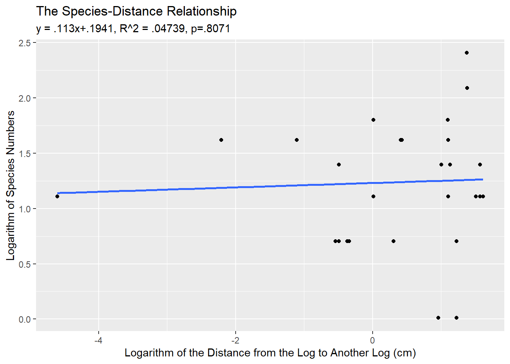

Collecting the Data: Ecology Lab is Fun!
In my ecology lab class, we were testing whether logs at the Ponkapoag Bog Trail were behaving as islands for species, in that they were harbouring species because they can be a specialized habitat. To do this, we went outside (yay!) and flipped over a bunch of logs to see what was underneath them. We also counted the number of species. Including this cool salamander (Plethodon cinerea, if you want to learn more about it.)

While it was fun to go outside and dig around in the dirt for a few hours where I’d normally be in school, what wasn’t fun were these mutates(). I had to do these mutates on the dataset because it’s important that all the variables be on the logarithmic scale, but we had to add .01 to all of the data points because the log of zero is undefined, but .01 is negligible, and that allows logarithms to be taken for all the data points.
ecology_lab_data <- ecology_lab_data %>%
mutate(log_area_log = log(log_area) + .01) %>%
mutate(log_species_log = log(log_species) + .01) %>%
mutate(log_distance_nearest_log = log(distance_nearest_log + .01)) %>%
mutate(under_log_area_log = log(under_log_area) + .01)The Graphs
The graphs are here! These graphs relate the area of the log to the number of species found underneath it. We would expect that this should be positive if the logs are behaving as islands because they’re harbouring species. We also expect that logs that are close to each other have a higher number of species because the species can travel back and forth.
## Warning: Removed 1 rows containing non-finite values (stat_smooth).## Warning: Removed 1 rows containing missing values (geom_point).
Faulty Assumptions = Nonsignificant Result!
Without getting too technical, as you can see, the variables are all positively correlated with each other, but not significantly, as they should have been. Not one of the theories of island biogeography was significantly supported. So that begs the question - are logs actually behaving as islands? In order to collect the data, we had to assume that the logs were behaving as islands in order for the hypotheses to hold, but they might not have.
I was wondering why the logs weren’t behaving according to Island Biogeography Theory. I thought that it might have been due to our experimental error (there was a lot of it because at one point we were definitely supposed to be counting species but I was definitely distracted and playing with salamanders.)
Then I decided to run a two-sample t-test. We recorded the number of species actually under the log, but we had also recorded a random sample of the number of species just hanging out in the forest floor, not necessarily underneath logs, to run the experiment.
t.test(ecology_lab_data$matrix_species, ecology_lab_data$log_species, alternative=c("less"))##
## Welch Two Sample t-test
##
## data: ecology_lab_data$matrix_species and ecology_lab_data$log_species
## t = -0.55633, df = 55.992, p-value = 0.2901
## alternative hypothesis: true difference in means is less than 0
## 95 percent confidence interval:
## -Inf 0.6226703
## sample estimates:
## mean of x mean of y
## 3.620690 3.931034And what do you know? The number of species underneath the log and the number of species on the forest floor wasn’t different. The p-value of 0.2901 was not significant, meaning the logs weren’t acting as islands as we had originally assumed. So the reason why we didn’t have a significant result is because we had a faulty assumption to begin with.
The Message of the Story
So, really, the story isn’t that exciting. We tried to apply the concepts of Island Biogeography Theory to these logs we found in the woods, but our assumptions were wrong. The coolest thing was that I was able to make these graphs in R all by myself (with some input from my awesome ecology TA) and write about them in this really long lab report (11 pages!!!), but really, the coolest thing about this whole experience was definitely…
the salamanders.
Figure 1: I mean, look at him! This cutie definitely belongs in r/tinyanimalsonfingers.